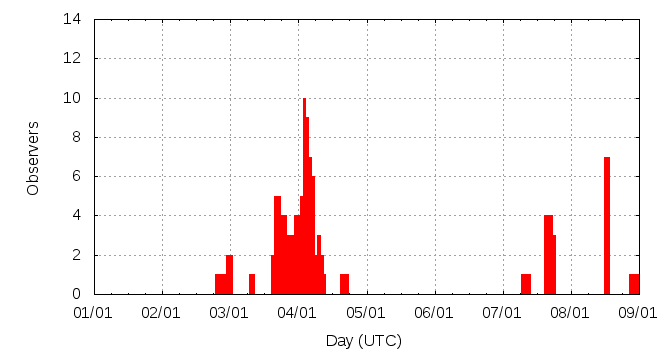

[ www.imo.net ]
This page shows automated results of the Quadrantids 2016, based on visual observations reported by citizen scientists through the report form of the International Meteor Organization (IMO). The information on this page is generated automatically; for scientific use please refer to manual analyses published in scientific journals (such as WGN). Send your feedback regarding this page to Geert Barentsen.
Page contents:
Note that the data will finally go into the Visual Meteor Database (VMDB) with manual inspection and rectifications. We are curretly completing the files of 2008-2011. The VMDB is an enormous project - any help will be greatly appreciated.
Page generated: 2016 March 3 at 21:40 UTC.
The graph below shows the ZHR (Zenithal Hourly Rate), which is the number of meteors an observer would see under a very dark sky with the radiant of the shower in zenith.
ZHRmax = 123 based on 835 Quadrantids reported in 133 intervals, assuming population index r = 2.1

| Time (UTC) | Solarlon | nINT | nQUA | ZHR | Particle density | |
|---|---|---|---|---|---|---|
| 2016-01-02 22:29 | 281.738 | 6 | 9 | 8 | ±3 | 14 / 109·km3 |
| 2016-01-03 14:55 | 282.436 | 5 | 10 | 18 | ±5 | 31 / 109·km3 |
| 2016-01-03 18:07 | 282.572 | 4 | 11 | 26 | ±8 | 44 / 109·km3 |
| 2016-01-03 20:15 | 282.662 | 3 | 13 | 27 | ±7 | 46 / 109·km3 |
| 2016-01-03 22:08 | 282.743 | 3 | 13 | 52 | ±14 | 89 / 109·km3 |
| 2016-01-03 22:31 | 282.759 | 3 | 11 | 57 | ±16 | 97 / 109·km3 |
| 2016-01-03 23:02 | 282.781 | 5 | 13 | 30 | ±8 | 51 / 109·km3 |
| 2016-01-03 23:37 | 282.806 | 7 | 31 | 44 | ±8 | 75 / 109·km3 |
| 2016-01-04 00:12 | 282.831 | 3 | 13 | 52 | ±14 | 89 / 109·km3 |
| 2016-01-04 00:43 | 282.852 | 5 | 29 | 33 | ±6 | 56 / 109·km3 |
| 2016-01-04 01:22 | 282.880 | 7 | 47 | 53 | ±8 | 90 / 109·km3 |
| 2016-01-04 01:47 | 282.898 | 6 | 31 | 52 | ±9 | 89 / 109·km3 |
| 2016-01-04 02:23 | 282.923 | 8 | 90 | 52 | ±5 | 89 / 109·km3 |
| 2016-01-04 03:00 | 282.949 | 11 | 70 | 39 | ±5 | 66 / 109·km3 |
| 2016-01-04 03:27 | 282.968 | 6 | 71 | 43 | ±5 | 73 / 109·km3 |
| 2016-01-04 04:27 | 283.011 | 8 | 83 | 50 | ±5 | 85 / 109·km3 |
| 2016-01-04 04:58 | 283.033 | 7 | 44 | 50 | ±7 | 85 / 109·km3 |
| 2016-01-04 05:28 | 283.054 | 8 | 97 | 74 | ±7 | 126 / 109·km3 |
| 2016-01-04 05:59 | 283.076 | 6 | 37 | 69 | ±11 | 118 / 109·km3 |
| 2016-01-04 06:28 | 283.097 | 7 | 38 | 50 | ±8 | 85 / 109·km3 |
| 2016-01-04 06:51 | 283.113 | 5 | 16 | 53 | ±13 | 90 / 109·km3 |
| 2016-01-04 07:58 | 283.160 | 1 | 16 | 100 | ±24 | 170 / 109·km3 |
| 2016-01-04 08:57 | 283.202 | 1 | 17 | 123 | ±29 | 210 / 109·km3 |
| 2016-01-04 16:45 | 283.533 | 3 | 15 | 60 | ±15 | 102 / 109·km3 |
| 2016-01-04 17:45 | 283.576 | 1 | 4 | 44 | ±20 | 75 / 109·km3 |
| 2016-01-07 11:51 | 286.384 | 3 | 5 | 10 | ±4 | 17 / 109·km3 |
| 2016-01-08 22:32 | 287.857 | 1 | 1 | 3 | ±2 | 5 / 109·km3 |
The reported intervals are automatically added together into the bins shown above, based on the number of meteors and the distribution of the intervals. For each bin, the following parameters are computed:
Data has been received from 36 observers in 12 countries. Thank you for your efforts!
Note: click on the map for an interactive version.

| Observer | Country | Teff | nQUA |
|---|---|---|---|
| Stephen Bedingfield | Canada | 0.78h | 29 |
| David Buzgo | Serbia | 0.46h | 4 |
| Yisheng Gong | China | 0.75h | 2 |
| Katsuyuki Kobayashi | Japan | 1.00h | 1 |
| Ralf Koschack | Germany | 3.36h | 156 |
| Richard Kramer | United States | 1h | 10 |
| Artem Mirgorod | Ukraine | 0.53h | 1 |
| Sirko Molau | Germany | 4.97h | 88 |
| Shangyi Ning | China | 0.73h | 1 |
| Pedro Perez Corujo | Spain | 2.17h | 67 |
| Yunyao Que | China | 0.75h | 1 |
| Mikiya Sato | Japan | 1.50h | 11 |
| Hideki Seo | Japan | 1.00h | 10 |
| Fangzheng Shi | China | 1.00h | 2 |
| Ziwei Su | China | 0.63h | 1 |
| Istvan Tepliczky | Hungary | 1.80h | 40 |
| Kazumi Terakubo | Japan | 1.00h | 3 |
| Branislav Savic | Serbia | 1.15h | 15 |
| Maciek Myszkiewicz | Poland | 2.80h | 5 |
| Karoly Jonas | Hungary | 5.33h | 91 |
| Shigeo Uchiyama | Japan | 3.5h | 28 |
| Terrence Ross | United States | 3.17h | 36 |
| Orlando Benítez Sánchez | Spain | 2.74h | 113 |
| Jurgen Rendtel | Germany | 5.13h | 107 |
| Ina Rendtel | Germany | 1.12h | 4 |
| Ivan Stankovic | Serbia | 0.63h | 13 |
| Maciej Myszkiewicz | Poland | 2.91h | 33 |
| Snezana Todorovic | Serbia | 0.47h | 7 |
| Andras Uhrin | Hungary | 0.63h | 32 |
| Valentin Velkov | Bulgaria | 2.67h | 2 |
| Xiaoyu Wang | China | 0.83h | 1 |
| Roland Winkler | Germany | 2.67h | 1 |
| Hong Yan | China | 0.83h | 2 |
| Jinye Yang | China | 0.71h | 1 |
| Jiaying Yang | China | 0.83h | 1 |
| Takao Yoshimura | Japan | 0.50h | 1 |
| Paul Zeller | United States | 1.42h | 0 |
| Yinghua Zhang | China | 0.75h | 1 |
| Zixue Zhou | China | 0.75h | 2 |
Create your own analysis. The files below can be opened using Excel:
qua2016_rate.csv (number of meteors per interval per observer)
qua2016_magn.csv (number of meteors per magnitude bin per observer)
The information on this page may be distributed freely provided credit is given to the International Meteor Organization (IMO) and, when possible, to the individual observers. The computer facilities to generate this page are provided by ESA/RSSD and Armagh Observatory.
References: